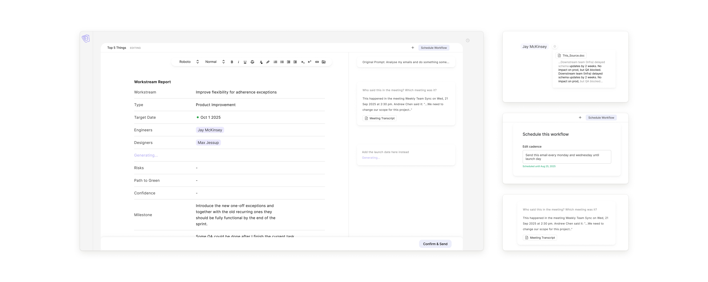
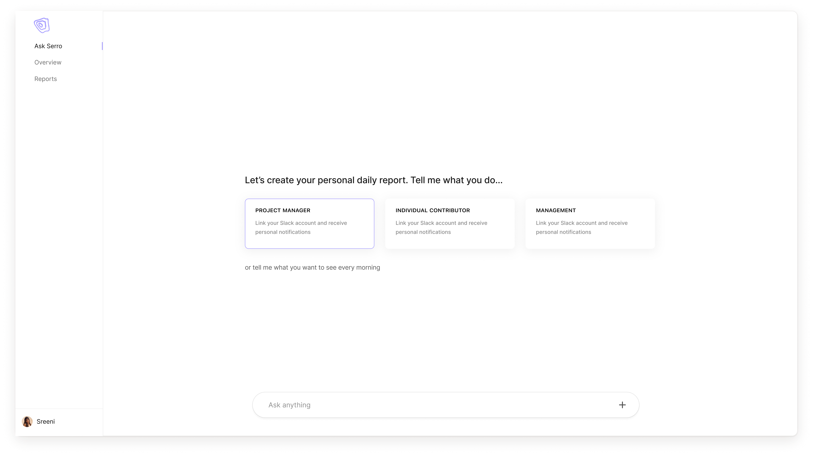
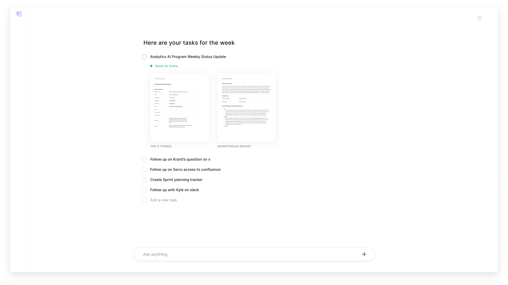
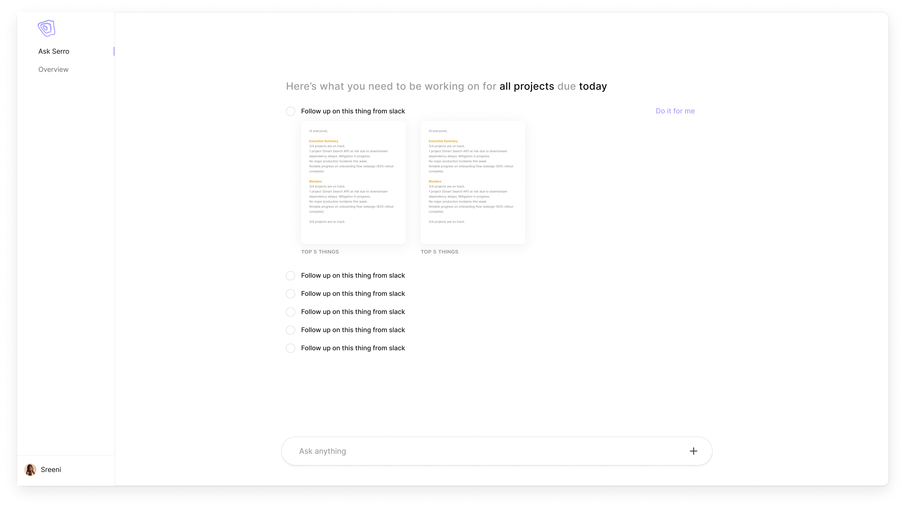
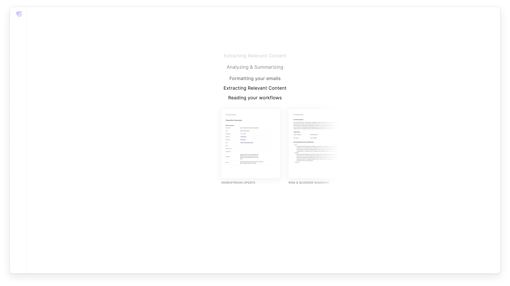
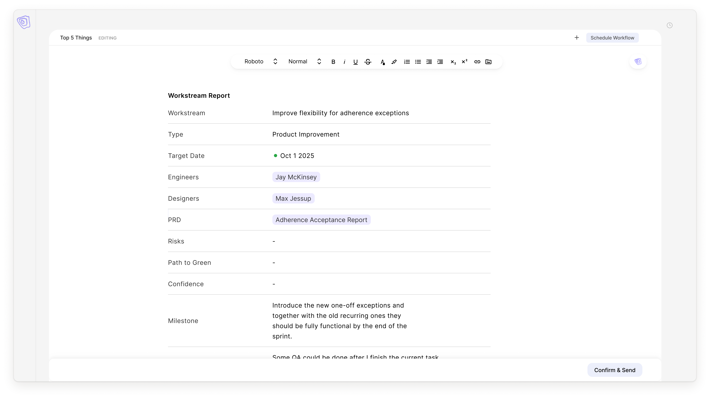
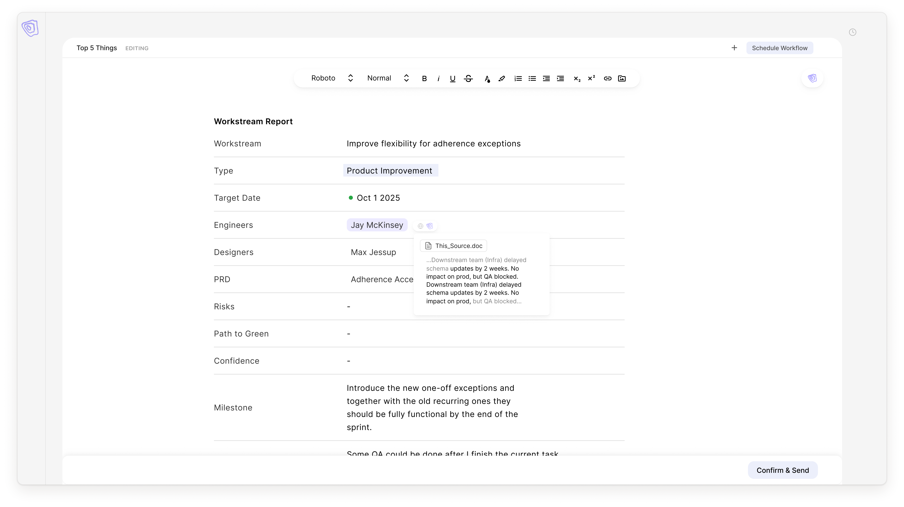
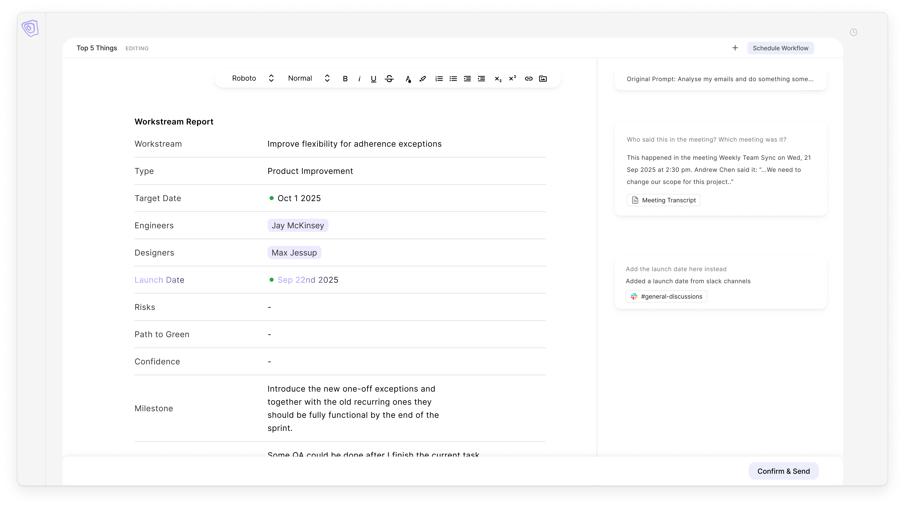
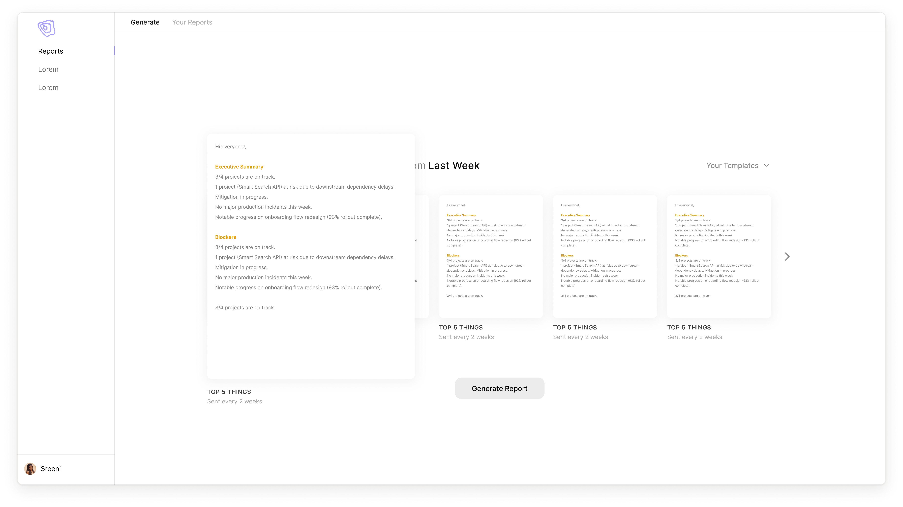
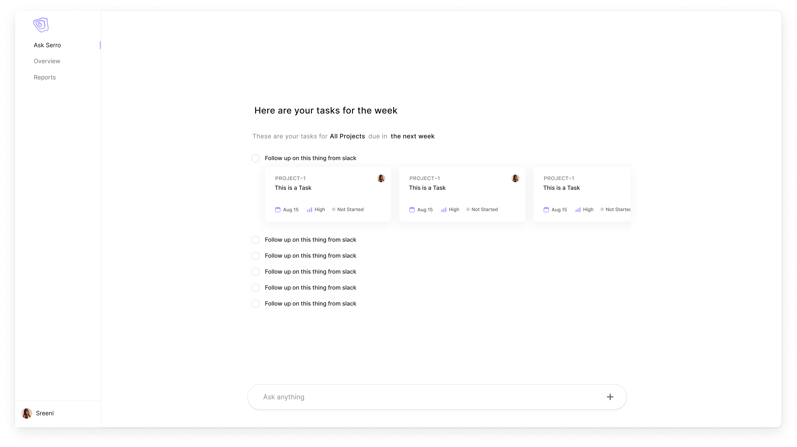

Engineering teams spend hours each week chasing status — pulling updates from Jira, Slack, emails, and meetings just to write a report nobody has time to read. Serro is an AI technical project manager that does it for them.
We designed Serro to be invisible infrastructure. The challenge was building something powerful enough to earn trust, yet minimal enough that it never added to the noise it was meant to eliminate.

Serro personalizes from day one. Tell it whether you're a project manager, individual contributor, or in management — and it configures your daily briefing around what actually matters to you, pulling from the tools and channels you already use.

One question at setup — Serro configures your entire briefing around your role and the tools you already use.

Your full week at a glance — open tasks, pending reports, and items ready for review, ranked by urgency.

The daily priority view surfaces exactly what needs action today — with one click to generate, send, and close the task.

Serro processes your emails, Slack messages, and meeting notes in real time to build your briefing automatically.
When a workstream report is due, Serro reads your emails, Slack messages, and meeting notes to draft it automatically. Every field is pre-filled — workstream, type, target date, engineers, risks, milestones — sourced directly from the information that already exists.

The report editor is structured and clean. Every field has a clear purpose — no freeform notes, no ambiguity. What gets sent is exactly what stakeholders need to make decisions.

Every AI-populated field cites its source. Hover any value to see exactly which document or message it came from — so engineers can trust what Serro wrote, and stakeholders can verify it.

The AI panel sits alongside every report. Ask Serro a question about your data, request a missing field, or have it pull a launch date from Slack — it searches your connected sources and populates the answer in place.
Engineering teams reduced time spent on status reporting by over 60%. Reports that used to take 45 minutes are generated in under 5 — with full source attribution, consistent structure, and zero follow-up questions from stakeholders.
Serro turns reporting from a recurring tax into background infrastructure — something that just happens, reliably, every time.

Report generation panel — one click drafts a complete status update sourced directly from your connected tools.

Task cards track every open action item with owner, due date, and current status across all your projects.